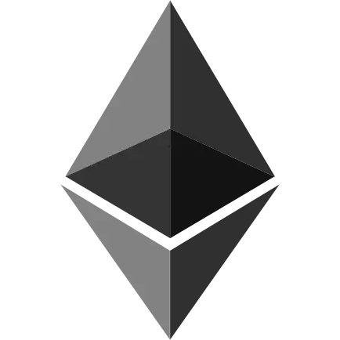

We believe security software like Kicksecure needs to remain Open Source and independent. Would you help sustain and grow the project? Learn more about our 14 year success story and maybe DONATE!
ElectrumDocumentationLedger
Hardware WalletPrevious
page: ElectrumIndex page:
DocumentationNext page: Ledger Hardware
Wallet
Ethereum

Ethereum Logo
Ethereum Wallet Security Considerations and How to use ETH
Introduction
TODO:
 Documentation for this is incomplete. Contributions are happily
considered! See this for
potential alternatives.
Documentation for this is incomplete. Contributions are happily
considered! See this for
potential alternatives.
Full vs Light Node Privacy and Security Considerations
Full Node Advantages
Similar to Bitcoin Core / ElectrumX, the whole blockchain gets downloaded and analyzed for the user's addresses/transactions locally on their own local computer.
Light Node Advantages
Much easier to use.
Light Node Disadvantages
Similar to electrum Bitcoin wallet when using third-party servers. A bit less severe since a Bitcoin wallet contains multiple addresses but a Ethereum wallet contains only one address. Could use a Qubes Disposables for watch-only.
Disk Space
Full Blockchain Validating Node disk space requirement more than 1 TB.
Full Node Appliances
There are ETH full node ready-made box one can buy. Maybe easier for clearnet users.
- https://dappnode.io/
- https://ava.do/
- https://medium.com/@JustinMLeroux/running-ethereum-full-nodes-a-guide-for-the-barely-motivated-a8a13e7a0d31
But these aren't optimized for anonymity / use with Tor.
ETH Full Node on Self-Hosted Remote Server
High disk space requirements.
Personal experience by Kicksecure developer Patrick. Maintenance intensive, things keep breaking, broken blockchain synchronization, development team was highly unresponsive in fixing critical issues such as blockchain synchronization, sync bugs. See bug report Unable to sync ethereum blockchain which was opened in 2017. No Ethereum developer attempted to debug the issue by asking other users or otherwise acknowledged the issue which was then automatically closed by the stale bot.
Full Node Conclusion
Looks very difficult and very messy.
Pruning Mode
TODO
Wallet Security Considerations
General Security Considerations
Avoid mixing wallets for ETH long term storage with wallets used for DeFi or NFT.
Be aware of the security issue with unlimited and infinite token approval.
How does the industry, institutional ETH custodians secure their funds?
- full nodes vs light nodes: Running ETH full nodes.
- anonymity: No regard for Tor / anonymity, which simplifies their setup.
- wallet security: Using smart contract based on chain multisig (public, source-available) such as Gnosis Safe or proprietary Threshold Signatures Scheme (TSS) wallets.
Gnosis Safe allegedly storing more than 1 billion $ USD. (xcancel) Would require more research if that is so indeed. No mainstream sources have been found yet.
smart contract based on chain multisig
Discouraged. Millions worth of ETH was and still is frozen in the parity multisig smartcontract. More references under Smart Contract On Chain Multisig vs Threshold Signature Wallets.
Is there a way to use multisig without smart contracts on Ethereum?
Ethereum does not support native threshold wallets. You need to use multisignature wallets like Gnosis Safe.
Gnosis Safe requires only one transaction per execution from the multisig wallet. Other communication happens off-chain. Thus your assumption "very expensive and slow, because it requires a lot of transactions." is incorrect.
Threshold Signature Wallets
Great in theory. In practice, there are no known Freedom Software based implementations available.
Proprietary products are discouraged due to privacy issues. Presumably as for any corporation, they would want to setup a call with their customer, identify, onboard, want to know details about the operation, possibly upsale and vendor lock-in.
Wallet Security Setups Comparison
Introduction
MyCrypto could be replaced by MyEtherWallet (MEW) because it is very similar or any other suitable wallet, if there are other alternatives.
Local Wallet Recommendation
In all cases, it is far better if the wallet software is running locally on the user's own computer. This is possible with both, MyCrypto and MEW.
Using web services such as mycrypto.com or
myetherwallet.com is discouraged.
Watching
Users not using a full node should consider using multiple wallets to watch their addresses. For example:
- MyCrypto
- MyEtherWallet
- use web services such as etherscan.io
Option 1: MyCrypto-online + Hardware Wallet
Both, MyCrypto-online VM + MyCrypto-offline VM on the same computer.
Advantages:
- malware resistance: Can survive Qubes online computer dom0 compromise.
Disadvantages:
- no encryption: Adversaries with physical access might be able to extract the private key from the hardware wallet, see Hardware Wallet Security wiki page, table entry Unauthorized Physical Access.
- No multisig.
Option 2: on same computer - MyCrypto-online + MyCrypto-offline
Both, MyCrypto-online VM + MyCrypto-offline VM on the same computer.
Advantages:
- encryption: Adversaries with physical access stealing a luks full disk encrypted offline computer while powered off according to current knowledge won't be able to extract private key.
- Usability. Easy to use in Qubes with copy/paste. Would be similar to the electrum split wallet video that I recorded for you in the beginning.
Disadvantages:
- No multisig.
- malware resistance: Cannot survive Qubes online computer dom0 compromise.
Option 3: with two computers, physical isolation (airgap) - MyCrypto-online + MyCrypto-offline
MyCrypto-online and MyCrypto-offline running on different, physically isolated computers.
Advantages:
- encryption: Adversaries with physical access stealing a luks full disk encrypted offline computer while powered off according to current knowledge won't be able to extract private key.
- malware resistance: Survive Qubes online computer dom0 compromise.
Disadvantages:
- No multisig.
- Usability: No built-in QRcode feature. The user would need to,
either:
- A) Create QRcode on the command line using for
example
qrencodeand it on a physically isolated offline computer, photograph it with a camera, decode it usingqrencode, or - B) transfer the signed transaction using USB (which comes with the usual USB risks).
- A) Create QRcode on the command line using for
example
Wallets
Installation
TODO
Metamask
Metamask by ConsenSys.
Pros:
- Reputation.
Cons:
- No offline signing at time of writing.
- No desktop app.
Neutral:
- Stateful. Reset wallet feature often needed.
MyCrypto
Still maintained?
Pros:
- desktop app
Quote MyCrypto: unclear if MyCrypto desktop application is maintained or not:
app.mycrypto.comcurrently does not work offline, so for those situations we recommend using the desktop application. It is not actively maintained however, and we don't add any new features to the desktop application. It's still perfectly usable though if you have a plain private key or want to send offline.We are working on a replacement for the desktop application, which you can check out here: https://github.com/MyCryptoHQ/quill. It's still a work in progress however, and we don't recommend using it with "real" private keys just yet.
We will still update it in case of security vulnerabilities, at least until the release of the new application.
Offline use notice: The VM or computer needs to be really offline. It cannot be tested online, not even for testing purposes. This is because MyCrypto auto detects if VM is offline or online and the application changes accordingly. [1]
Phoning home to mycryptoapi.com?
Usability for Offline Use
According to MyCrypto: How to Make an Offline Transaction one needs to find out:
- nonce
- gas limit (easy, 21000 for ETH, rarely changes, harder for token, hardest for DeFi)
- gas price (gwei)
- data: keep this empty for simple ETH transfers
This is likely specific to Ethereum and unspecific to MyCrypto.
MyEtherWallet
Also called MEW. Very similar to MyCrypto.
Can run locally, in browser: yes
Cons:
- No desktop app.
Offline support:
- 2021: I've tried on multiple offline browsers. Firefox doesn't load and Chrome will slugishly #2777
- 2024: MyEtherWallet-v6.6.16-hotfix.1-Offline - Blank Page after entering Private Key #4562
- https://help.myetherwallet.com/en/collections/3043288-mew-offline
- 2019 version of MEW is last supporting offline mode as per above ticket: https://github.com/MyEtherWallet/MyEtherWallet/releases/tag/v5.2.0
Local:
AirGap Vault
No Linux support at the time of writing.
Not in F-Droid app store.
Gnosis Safe
depending on web interfaces?
Donations
Donate Ethereum (ETH) or Token to Kicksecure.
0xf27EAe399f186600Dc6e5A418793C4A3D58a74e7

See Also
- https://ethereum.org/en/wallets/
- https://www.reddit.com/r/ethereum/comments/br7al5/best_offline_signing_wallet/
Footnotes
Categories: Documentation